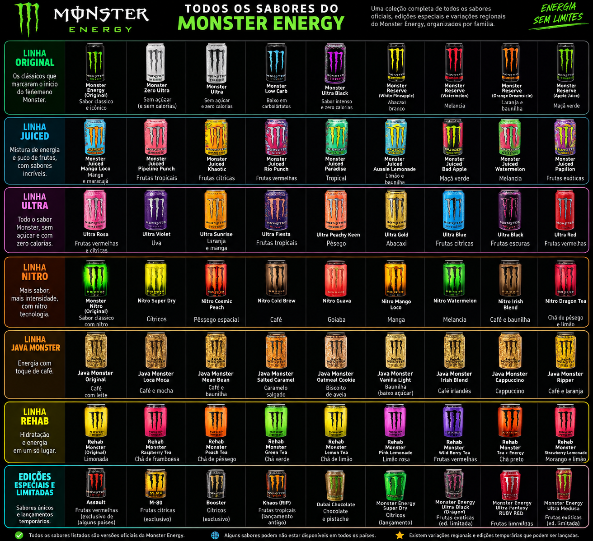
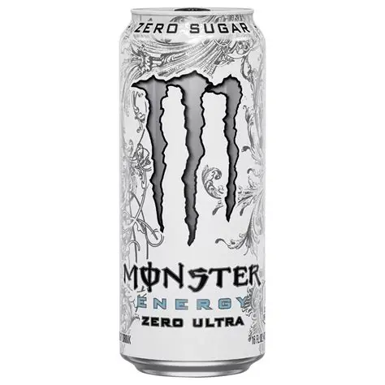
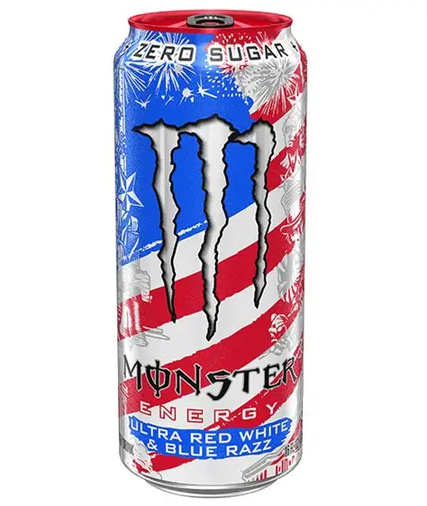
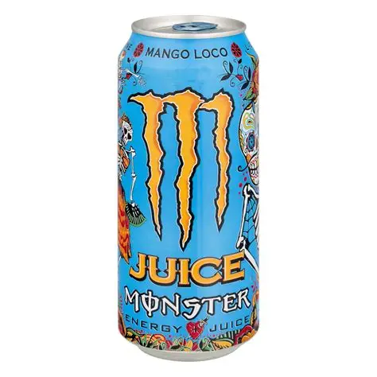
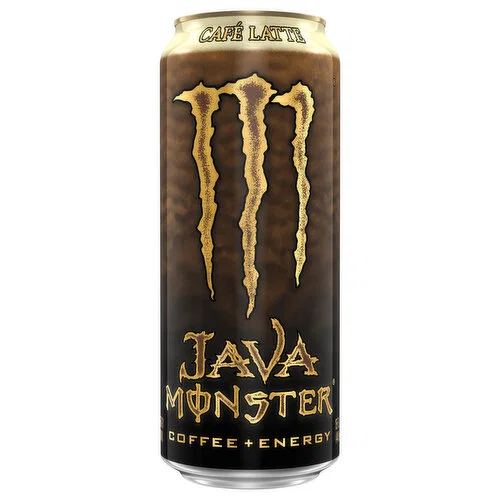
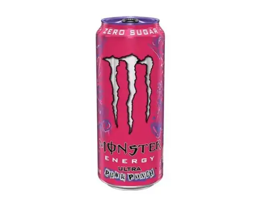

Os Sabores que existe
Essa imagem apresenta todos os sabores de Monster que existem, faltando apenas as variações de alguns dos sabores e boa parte desses monsters precisam ser importados.

Esse site fala sobre diversos sabores de Monster, cita os sabores com as melhores avaliações, apresenta o meu top 5 sabores e fala um pouco sobre os riscos ao ingerir essa bebida de forma frequente a longo prazo.
Essa é uma avaliação realizada globalmente para cada um dos sabores desses energéticos, alguns sabores precisam ser importados.





Abaixo estão listados de forma ordenada os 5 sabores que eu mais recomendo.



Essa imagem apresenta todos os sabores de Monster que existem, faltando apenas as variações de alguns dos sabores e boa parte desses monsters precisam ser importados.
